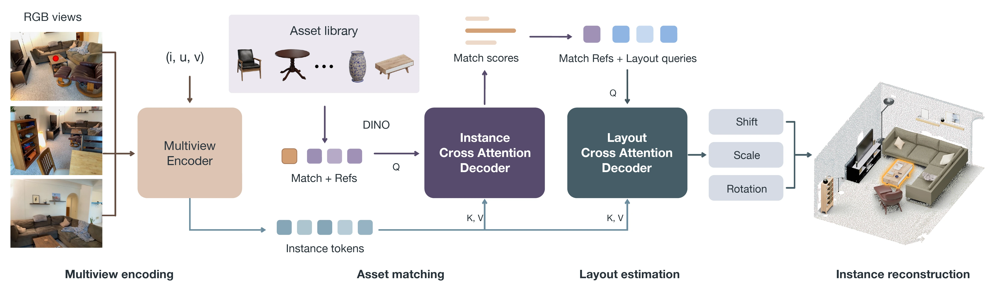

Asset Localization By
Unified Matching
Find reusable 3D assets in a few views of a room and place them in the scene.
From a room to reusable objects
ALBUM uses multi-view RGB images, a point prompt, and a library of reference assets. It retrieves a matching asset and estimates its translation, rotation, and scale in the shared scene.
Scene gallery
Explore saved 3D placements across ScanNet++, Replica and ALBUM-Bench. Choose a room to see its input views and the library that supplied its objects.
Asset library
Select a numbered camera to compare its input.
Teal surfaces show the registered ground truth.
The room points could not load. Select Dense background to retry.
Input cameras
- 63.50%
- Joint retrieval and layout success on ALBUM-Bench
- 48.4%
- Instance-averaged alignment accuracy on Scan2CAD
- 98.12%
- Exact-CAD Top-5 on Scan2CAD with scene-specific candidates
Point to an object
Click an object in the 3D room or a numbered point in the image to highlight its placement. For recorded queries, choose a Top-5 match to try it in the room.
Input
Recorded point promptsOutput
Cached Top-5 retrievalSelect a point
Loading room…
Each marker replays a saved point prompt.
Unified matching
Asset matching and layout estimation read the same instance memory.

Dataset
Asset library
Explore 25 ASE assets and seven articulated Artiverse models in their original materials. Watch the doors, drawers, and lids move as each model turns.
Furnished rooms
Follow the render cameras through ALBUM-Train. Each furnished layout records which assets appear in the room and where they were placed.
- 100,414
- Furnished layouts constructed